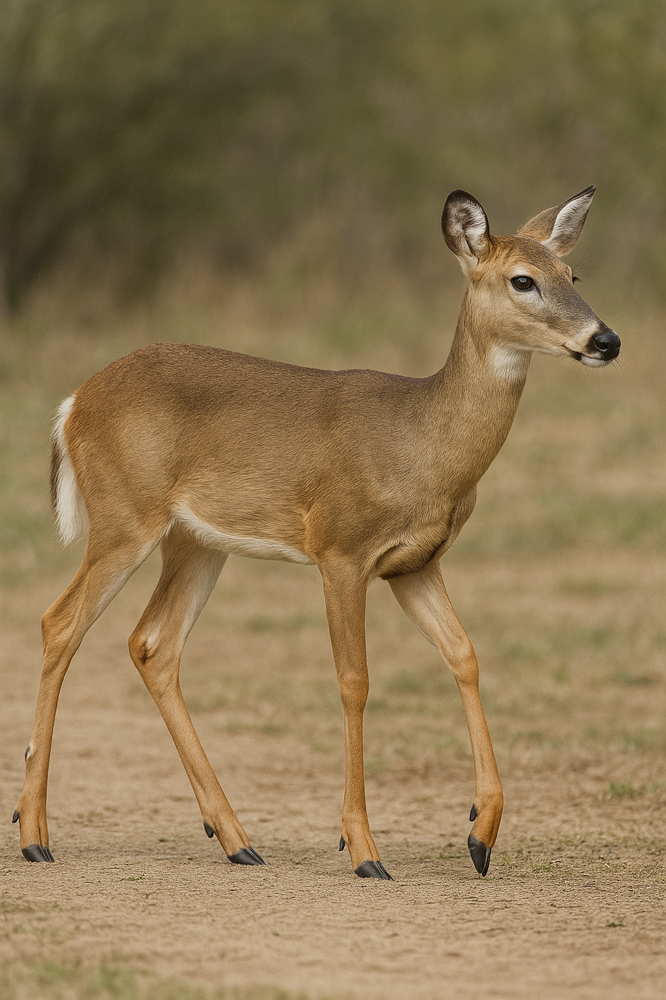
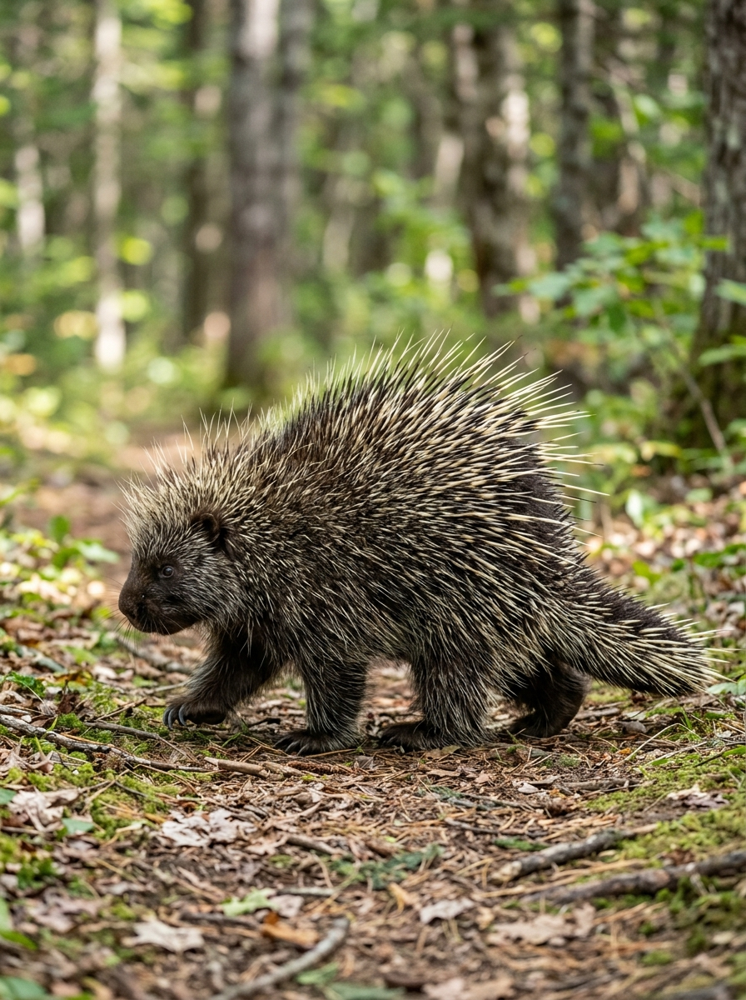

Body coverings, claws, wings, and other visible parts do important jobs for survival.
📋 NGSS Standard: 4-LS1-1 — Construct an argument that plants and animals have internal and external structures that function to support survival, growth, behavior, and reproduction.
🎯 Learning Objective
Students will investigate external Structures for Survival, make observations during the lesson activity, and explain what they learned using evidence from the lesson.
Animals do not all have the same body plan because different external structures help them solve different survival problems. Thick fur helps keep heat in. Waterproof feathers help keep water out. Sharp claws help grip, dig, or catch food. Long legs can help an animal run away or reach new places.
When scientists look at an animal structure, they ask a function question: What job does this part do for the organism? In Grade 4 Life Science, we are not just naming body parts. We are connecting structure to survival, growth, behavior, and reproduction.
The Science
External structures are the body parts we can observe from the outside. They can help animals find food, stay warm or cool, move safely, defend themselves, attract mates, or care for offspring. Structure and function are linked: the shape, texture, size, and placement of a body part often help explain what it does.
Key vocabulary: external structure, function, survival, body covering, claw, beak, hoof, fin
Materials
Gather Before You Start
printed lesson pages, Student Worksheet, and the included animal cards on this lesson page
pencil or colored pencils
optional: magnifying glass for feather/fur/shell observation
Printables on this page: the Student Worksheet and the Animal Cards for This Lesson section are both included below.
🦆 Animal Cards for This Lesson
Use the included animal cards on this lesson page for the observation, sorting, and worksheet activities. Each card includes a large study image plus one visible external structure and the job it helps the animal do. You can point to the cards on screen or print this page and cut them apart for easier sorting.
🦆
Duck
stays dry + moves in water
Notice this structure Waterproof feathers and webbed feet
How it helps These structures help a duck stay dry and push through water while it swims.
Look for evidence
Feathers shed water instead of soaking it up.
Webbed feet act like paddles.
🐻❄️
Polar Bear
stays warm
Notice this structure Thick fur and large paws
How it helps Thick fur helps keep heat in, and large paws help the bear move across snow and ice.
Look for evidence
The fur covers most of the body.
The paws are broad for gripping slippery ground.
🐢
Turtle
stays protected
Notice this structure Shell
How it helps A hard shell protects the turtle's body from danger.
Look for evidence
The shell is a hard outer covering.
The turtle can pull soft body parts closer to the shell.
🦅
Hawk
gets food
Notice this structure Hooked beak and sharp talons
How it helps These structures help a hawk catch food and tear it into pieces.
Look for evidence
The beak curves downward.
The talons are sharp for gripping prey.

🦌
Deer
moves fast
Notice this structure Long legs and hooves
How it helps Long legs and hooves help a deer run quickly and travel safely across land.
Look for evidence
The legs are tall and built for running.
The hooves help the deer push off the ground.

🦔
Porcupine
stays protected
Notice this structure Quills
How it helps Sharp quills help protect the porcupine from animals that might attack it.
Look for evidence
The quills cover the back and sides.
The quills create a painful barrier for predators.
What to notice: These cards show different kinds of external structures. Some help animals move, some help them stay warm or dry, some help them get food, and some help protect the body.
Optional print tip: If your child likes hands-on sorting, print this page and cut along the space between the cards. The lesson still works without cutting.
Let's Get Started
Step 1: Start with a quick picture walk using the included animal cards on this lesson page. Ask students to notice one visible body part on several animals before naming its job.
Step 2: Model structure-function thinking with the duck card: “A duck has waterproof feathers. That helps it move through water and stay warm.”
Step 3: Sort the included animal cards by the kind of job the structure does: movement, protection, finding food, or staying warm/cool.
Step 4: Have students choose two animals from the included animal cards on this lesson page and write or say how one external structure helps each animal survive.
Step 5: Use the worksheet claim box to complete the sentence: “This structure helps the animal survive because ...”
Discussion Questions
Q: Why would two animals need different body coverings?Look for answers about habitat, temperature, camouflage, or protection.
Q: How can the same kind of structure do different jobs?Guide students to examples like claws for digging, climbing, holding, or catching prey.
Q: Why is it not enough to only name a body part?Look for the idea that science explanations need function, not just labels.
Extensions
Revisit the included animal cards on this lesson page and challenge your child to sort them a second way: by animals that stay safe mostly through body covering, by animals that move quickly, and by animals whose structures help them get food. Then add one real-life observation from a pet, bird outside, or zoo memory as an optional bonus example.
Parent/Teacher Notes
Teaching note: Keep examples concrete and familiar. The goal is not perfect zoology vocabulary for every species. The goal is strong structure-function reasoning tied to 4-LS1-1. The included animal cards on this lesson page are the main evidence source for the activity, so encourage students to point to something visible before explaining its job.
🌱 Student Worksheet — External Structures for Survival 🌱
Use the included animal cards from Step 1 on this lesson page. Name an animal and one external structure you noticed.
Step 3 — Match the Job
This chart goes with Step 3. Use the included animal cards from this lesson page to sort structures by the job they do and fill in the chart.
Structure
Possible job
Evidence from the included card
fur / feathers / shell / claws
beak / hoof / fin / tail
Claim Box
Use one of the included animal cards from this lesson page. Complete the sentence: One external structure that helps an animal survive is ... because ...
🔑 Parent Answer Key
Detach note: Student wording may vary if the structure-function science is correct.
What Success Looks Like: Student names a visible structure from one of the included animal cards on this lesson page, tells what job it does, and connects it to survival.
Acceptable examples: Ducks use waterproof feathers and webbed feet to stay dry and swim; polar bears use thick fur to stay warm; turtles use shells for protection; hawks use hooked beaks or talons to get food; deer use long legs and hooves to move quickly; porcupines use quills for defense.
Evidence source reminder: Students may use any of the included animal cards from this lesson page as evidence if they correctly connect structure to function.
Coach for precision: If a student only writes “feathers,” prompt with “What do the feathers help the bird do?”
🥼
This is a preview. Unlock the full lesson.
You're seeing the lesson preview. Subscribe to access the full procedure, Student Worksheet, discussion questions, and Parent Answer Key — for every lesson in the K–5 curriculum. $99/year. Cancel anytime.